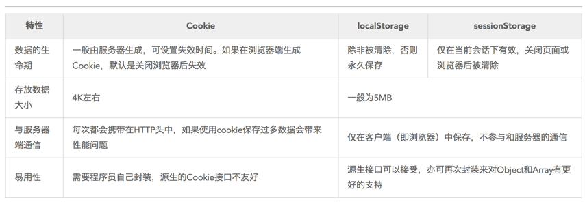
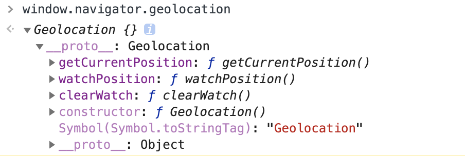
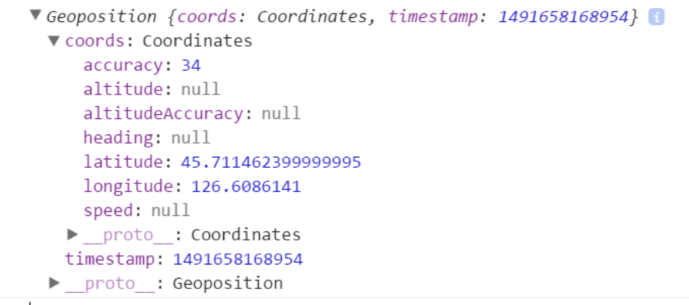
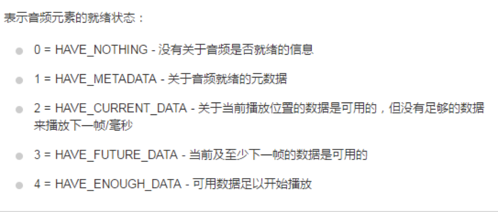
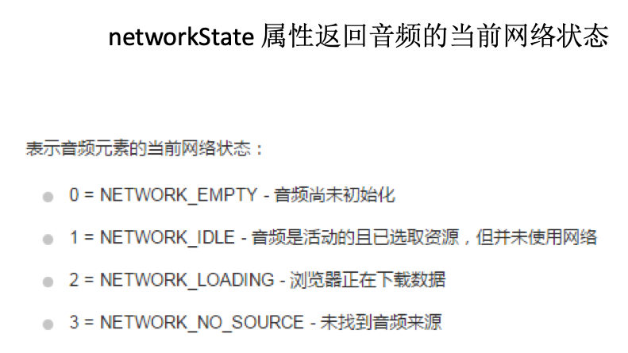
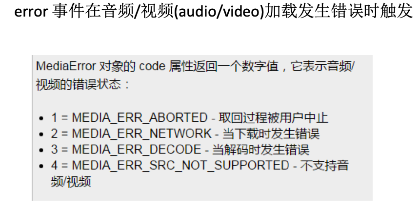
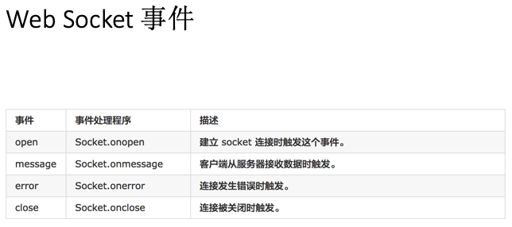

HTML5学习笔记
Canvas 画布
Canvas应用场景：
- 游戏
- 图表
- 动画
- condepen.io（HTML5动效）
Canvas 发展史
最早在apple Safari1.3中引入，ie9之前的浏览器不支持canvas
如何使用canvas
添加canvas标签
1 | <canvas width = 500 height = 500></canvas> |
如何画线段
1 | ctx.moveTo(x,y) 移动到x,y坐标点 |
fill和stroke方法都是作用在当前的所有子路径
完成一条路径后重新开始另一条路径时必须使用beginPath()开始子路径的一个新集合
如何使用Canvas画矩阵
1 | ctx.rect(x, y,dx,dy) |
如何擦除当前区域： ctx.clearRect
如何画圆角：
1 | ctx.arcTo(x1,y1,x2,y2,r) |
坐标轴的抓换
1 | tanslate(dx,dy) 重新映射到画板上的（0,0）位置 |
渐变
createLinearGradubt(x1,y1,x2,y2);线性渐变，必须在填充渐变区域里定义渐变，否则没有效果
- createRadialGradient(x1, y1, r1, x2, y2, r2); 径向渐变
bg.addColorStop(p.color)
阴影：
1 | ctx.shadowColor |
文本：
- fillText();
- strokeText();
- measureText(‘helloworld’）
线段样式
- lineCap
- lineJoion
绘制图片：
1 | ctx.drawImage(); |
将canvas内容导出
- canvas.toDataURL(); 是canvas自身方法不是上下文对象
- 将canvas的内容抽取成一张照片，base64编码格式（注意同源策略）
- 将canvas内容放进img元素里
获取canvas像素信息
1 | ctx.getImageData(x,y,dx,dy) |
SVG（Scalable Vector Graphics）
可缩放适量图形
SVG应用场景:
- 图表
- 图标icon
- 动效
- 矢量图
使用svg画各种各样的图形：
1 | 1. 直线 |
path指令：（大写代表绝对定位，小写表示相对定位）
1 | M = moveto |
SVG渐变
- 线性渐变
- 径向渐变
HTML5动画api requestAnimationFrame
- 页面刷新钱执行一次
- 1000ms 60fps -> 16ms
- cancelAnimationFrame
- 用法和setTimeout类似
- 兼容性(只在IE10以上的浏览器)用老浏览器就用setTimeout
1 | window.requestAnimFrame = (function(){ |
客户端存储
- Storage
- localstorage (永久的)
- sessionstorage(关闭浏览器就没有了)
- cookie（存储容量很小，4K左右）
如何使用storage存储和读取数据
1 | localStorage.name = 'admin' //存字符串 |
storage作用域
- localSotrage -> 文档源限制
- sessionStorage -> 文档源显示 + 窗口
storage 的API
- setItem(name,val) 设置属性值
- getItem(name) 获得属性值
- removeItem(name) 移除属性
- clear() 清除属性
cookie
- 存储信息到用户的设备上，数据量比较小
- navigator.cookieEnable 监测是否开启了cookie
设置cookie值
1 | document.cookie = “name=aimee” |
cookie 与 storage的对比

history
- history.back();
- history.forward();
- history.go(n)
通过修改hash和hashchange事件来实现历史纪录管理
1 | //1、pushState |
worker(异步操作的api)
1 | var worker = new Worker('workder.js') |

geolocation
- getCurrentPosition() //获取当前的位置信息
- getCurrentPosition(s,e,p)
- success 回调 必须的
- error 回调
- option 参数
- watchPosition() //监视位置变化, 和1参数一样
- clearWatch() //清除位置监视
1 | window.navigator.geolocation.getCurrentPosition(suc) |


PositionError对象
- 用户拒绝code = 1;
- 获取不到 code = 2;
- 连接超时 code = 3;
配置参数
enableHighAccuracy 是否需要高精度位置默认false
timeout 单位ms 请求超时时间 默认infinity
maximumAge 单位ms，位置信息过期时间 设置为0就无条件获取新的地理位置信息 默认0
https://dev.w3.org/geo/api/spec-source.html#position_options_interface
watchPosition
1 | var id = geolocation.watchPostion() //用于注册监听器，在设备的地理位置发生个改变的时候自动被调用 |
devicemotion事件所包含的属性
- accelerationIncludingGravity （包括重心引力）重力加速度
- acceleration 重力加速度
（需要陀螺仪支持） - rotationRate(alpha, beta, gamma)旋转速率
- interval // 获取的时间间隔
均为只读属性
多媒体：
- audio 音频
- video 视频
1
2
3
4
5
6
7
8<audio src= "./demo.mp3" controls = ></audio>
autoplay //自动播放控件
controls //设置控件
preload(none/metadata/auto)预加载
metadata :元数据 诸如时长、比特率、帧大小这样的原数据而不是媒体内容需要加载的
loop： 是否循环播放音频or视频
poster:(video独有)，当视频不可用的时候，使用一张图片替代
多类型选择器：
1 | <audio id="music"> |
脚本化：
1 | var audio = document.getElementById('audio'); |
播放的方法
- play() 方法
- pause() 方法 //用于暂停
- load()方法 用于重新加载视频/音频元素
表示播放音量，介于0(静音)~1(最大音量)之间，默认1。将muted属性设置为true则会进入静音模式，设置为false则会恢复之前指定的音量继续播放。超过范围会报错[0, 1]
播放速率playbackRate：用于指定媒体播放的速度。该属性值为1.0表示正常播放，大于1则表示快进，0-1之间表示慢放，负值表示回放。
currentTime/duration 属性
- currentTime设置或返回音频视频的当前位置
- duration 返回当前音频/视频的时常
1
2
3
4
5
6
7
8
9
10audio.currentTime = 50;
button.addEventLidtener('clkick',function(){
consoloe.log(audio.currentTime)
}
)
window.onload = function({
console.log(audio.duration);
})
played/buffered/seekable
played属性返回已经播放(看过)的时间段，buffered属性返回当前已经缓冲的时间段，seekable属性则返回用户可以跳转的时间段。这三个属性都是TimeRanges对象，每个对象都有一个length属性以及start()和end()方法，length属性表示当前的一个时间段，start()与end()分别返回当前时间段的起始时间点和结束时间点(单位是秒，起始参数是0)
paused/seeking/ended
这三个属性用来查询媒体播放状态，paused为true表示播放器暂停。seeking为true表示播放器正在调到一个新的播放点，如果播放器播放完媒体并且停下来，则ended属性为true。
canPlayType()方法
1 | var a = new Audio(); |
事件
- play 开始播放触发
- pause 暂停触发
- loadedmetadata 浏览器获取完媒体的元数据触发
- loadedata 浏览器已经加载完当前帧数据，准备播放时触发，注意兼容IE8
- ended 当前播放结束后触发
readyState属性音频的当前就绪状态



drap ＆ drop(常用语各种拖动操作中)
创建可拖动元素
1
<div id="abc" draggable="true"></div>//使用draggable之后就能够拖拽元素了
关于拖拽的相关事件：
- dragstart 被拖拽元素 开始被拖拽时触发 e.dataTransfer.setData(“data”,e.target.id)
- dragend 被拖拽元素 拖拽完成时
- dragenter 目标元素 拖曳元素进入目标元素
- dragover 目标元素 拖拽元素在目标元素上移动
- drop 目标元素 被拖拽的元素在目标元素上同时鼠标放开触发的事件
- e.dataTransfer.getData(“data”)
需要阻止dragover的默认行为才会触发drop事件1
2
3
4
5
6
7
8
9
10
11
12
13
14
15
16
17
18
19
20
21<script>
var item = document.getElementById("abc");
item.addEventListener('dragstart',function(){
console.log("akshd")
})
var itemO = document.getElementById("wrapper");
itemO.addEventListener('dragenter',function(){
console.log('dragenter')
})
//这个是写在被进入的元素里面
</script>
DragEvent 事件对象
//传值
e.dataTranSfer.setData("data",e.target.id)
//取值
e.dataTransfer.getData("data")
FileReader 读取文件
- abrot() 终止读取
- readAsBinaryString(file) 将文件读取为二进制编码
- readAsDataURL(file) 将文件读取为DataURL编码
- readAsText(file,[encoding]) 将文件读取为文本
- readAsArrayBuffer(file) 将文本读取为arraybuffer 通过不同的方式读取文件
FileReader 事件
- onloadstart 读取开始时触发
- onprogress 读取中
- onloadend 读取完成，无论成功或失败
- onload 文件读取成功完成时触发
- onabort 中断时触发
- onerror 出错时触发
1
2
3
4获取读取的结果
fr.onload = function(){
tihs.result;
}
Web Socket（是一个新的协议）
WebSocket 对象提供了一组 API，用于创建和管理 WebSocket 连接,
以及通过连接发送和接收数据.
Websocket 其实是一个新协议，跟HTTP协议基本没有关系，只是为了兼容现有浏览器的握手规范而已.借用了HTTP的协议来完成握手
产生背景：
- 在 HTTP/1.0 中,大多实现为每个请求/响应交换使用新的连接
- 在 HTTP/1.1 中,一个连接可用于一次或多次请求/响应交换
- HTTP协议中，服务端不能主动联系客户端，只能有客户端发起。
- webSoket服务器和客户端均可主动发送数据
建立连接的握手：
- 当Web应用程序调用new WebSocket(url)接口时，Browser就开始了与地址为url的WebServer建立握手连接的过程。
- Browser与WebSocket服务器通过TCP握手建立连接，如果这个建立连接失败，那么后面的过程就不会执行，Web应用程序将收到错误消息通知。
- 在TCP建立连接成功后，Browser通过http协议传送WebSocket支持的版本号，协议的字版本号，原始地址，主机地址等等一些列字段给服务器端。
- WebSocket服务器收到Browser发送来的请求后，如果数据包数据和格式正确，客户端和服务器端的协议版本号匹配等等，就接受本次握手连接，并给出相应的数据回复，同样回复的数据包也是采用http协议传输。
- Browser收到服务器回复的数据包后，如果数据包内容、格式都没有问题的话，就表示本次连接成功，触发onopen消息，此时Web开发者就可以在此时通过send接口向服务器发送数据。否则，握手连接失败，Web应用程序会收到onerror消息，并且能知道连接失败的原因。
1 | 创建webSocket |
webSocket方法
1 | Socket.send() 方法使用连接传输数据 |

webSocket的优点
- 客户端与服务器都可以主动传递数据给对方
- 不用频率创建TCP请求及销毁请求，减少网络带宽资源的占用，同时也节省服务器资源